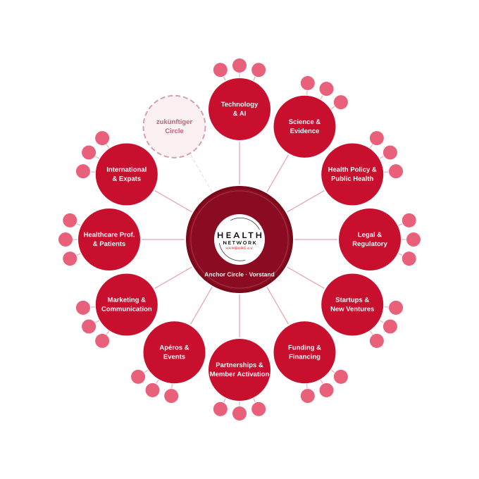

Wer wir sind
Wir verbinden Menschen, Ideen und Verantwortung für Gesundheitsinnovation in Hamburg und drumherum.
Das Health Network Hamburg e.V. ist eine offene, diverse und niedrigschwellige Brückenplattform für alle, die das Gesundheitswesen in der Metropolregion Hamburg mitgestalten wollen. Wir bringen Menschen aus Versorgung, Wissenschaft, Start-ups, Gesundheitswirtschaft, Politik, Verwaltung, Technologie und Zivilgesellschaft zusammen, um Perspektiven zu verbinden, Silos zu überwinden und Innovationen gemeinsam in die Umsetzung zu bringen.
Vision & Mission
Warum es uns gibt
Das Gesundheitswesen steht vor tiefgreifenden Herausforderungen – und zugleich vor enormen Chancen. Kostendruck, neue Technologien, neue Versorgungsmodelle, veränderte Erwartungen von Patienten, Fachkräftemangel, Präventionsbedarf und regulatorische Dynamik verlangen nach neuen Formen der Zusammenarbeit.
Genau hier setzt #HNHH an: Wir schaffen einen Raum, in dem relevante Akteure als natürliche Personen miteinander ins Gespräch kommen, voneinander lernen, gemeinsame Vorhaben entwickeln und konkrete Lösungen voranbringen. Unser Anspruch ist ein arbeitsfähiges Netzwerk mit Relevanz, Kompetenzzugang, sichtbarer Zusammenarbeit und konkreten Ergebnissen.
Wofür wir stehen
Das #HNHH versteht sich als Plattform für Menschen, die Gesundheit aktiv gestalten wollen. Unser Selbstverständnis basiert auf fünf Leitgedanken:
- Offenheit – Wir wollen eine zugängliche Plattform sein, die unterschiedliche Perspektiven willkommen heißt.
- Diversität – Wir glauben, dass bessere Lösungen dort entstehen, wo verschiedene Hintergründe, Kulturen, Professionen und Sichtweisen produktiv zusammenkommen.
- Niedrigschwelligkeit – HNHH soll ansprechbar, anschlussfähig und einladend bleiben – auch dann, wenn wir professioneller und strukturierter werden.
- Machermentalität – Wir wollen nicht beim Diskurs stehen bleiben, sondern Dinge ins Tun bringen, Pilotprojekte anstoßen und sichtbare Resultate erzeugen.
- Hamburg-Bezug – Wir wollen den Gesundheits- und Innovationsstandort Hamburg und Umgebung stärken, vernetzen und über seine Silos hinaus sichtbar machen.
Wie wir arbeiten
Wir verstehen Vernetzung nicht als Selbstzweck. Austausch ist für uns der Ausgangspunkt – nicht das Endergebnis. Deshalb bauen wir HNHH Schritt für Schritt als arbeitsfähige Plattform auf: mit autonomen Circles, Rollen mit Verantwortlichkeiten, Themenfeldern, Formaten und sichtbaren Mehrwerten für Circle Leads, Mitglieder und das Gesundheitssystem in Hamburg.
Die folgende Grafik zeigt unsere Circle-Struktur – elf thematische Circles um den Anchor Circle als Zentrum, die gemeinsam das Innovationsökosystem des HNHH bilden:

Circles und Projekte verstehen wir nicht isoliert, sondern als Teil eines gemeinsamen Innovationsökosystems. Entscheidend ist für uns immer die Frage: Wie kommen gute Ideen tatsächlich in das System, die Versorgung und die Wirkung für Menschen?
Zentrum · Vorstand
Anchor Circle
⌄
Der Anchor Circle trägt die strategische, rechtliche und kulturelle Gesamtverantwortung für den Verein und stellt sicher, dass alle Circles wirkungsvoll zusammenwirken.
A System, Policy & Regulation ⌄
Der Circle ist die überparteiliche gesundheitspolitische Stimme des Netzwerks und verbindet Entscheidungsträger, Politik und das Hamburger Gesundheitsökosystem.
Der Circle ist der rechtliche Enabler für alle Circles — er zeigt Handlungsoptionen auf statt Hürden zu benennen und beobachtet regulatorische Entwicklungen auf EU- und Bundesebene.
B Innovation, Ventures & Financing ⌄
Der Circle ist der zentrale Anlaufpunkt für Förder- und Finanzierungsfragen im Netzwerk und bringt Kapitalgebende und -suchende im Hamburger Gesundheitsbereich zusammen.
Der Circle vernetzt internationale Akteure und die Expat-Community mit dem Hamburger Gesundheitsökosystem und positioniert Hamburg als internationalen Innovationsstandort.
Der Circle bringt Health-Startups und Versorgungseinrichtungen zusammen und begleitet Innovationen von der Idee bis in die Praxis — mit Pitch-Review, Matchmaking und Pilotprojekten.
C Technology, Evidence & Care ⌄
Der Circle bringt die Stimme der Versorgungspraxis ins Netzwerk — Bottom-up statt Top-down — und verbindet Innovator:innen mit Fachkräften, die täglich mit der Versorgungsrealität arbeiten.
Der Circle stärkt die wissenschaftliche Glaubwürdigkeit des Vereins, übersetzt Forschung in die Praxis und verbindet Hamburger Hochschulen mit dem Netzwerk.
Der Circle befähigt den gesamten Verein mit KI und Technologie, reduziert ehrenamtlichen Aufwand durch Automatisierung und macht Wissen für alle Circles zugänglich.
D Community, Partnerships & Visibility ⌄
Der Circle gestaltet das Networking-Format im Hamburger Gesundheitsbereich — mit monatlichen Apéros, Sonderveranstaltungen und kuratierten Formaten für Vernetzung und Wissensaustausch.
Der Circle schafft ein klares, wiedererkennbares Profil für HNHH — mit dem Anspruch, Relevanz vor Lautstärke zu setzen und KI als Werkzeug für konsistente Kommunikation zu nutzen.
Der Circle gewinnt die richtigen Mitglieder und Partner, ermöglicht aktive Teilnahme für alle und strukturiert Onboarding, Kooperation und interne Kommunikation.
Circles und Projekte verstehen wir nicht isoliert, sondern als Teil eines gemeinsamen Innovationsökosystems. Entscheidend ist für uns immer die Frage: Wie kommen gute Ideen tatsächlich in das System, die Versorgung und die Wirkung für Menschen?
Was Mitglieder bei uns finden
HNHH soll ein Netzwerk mit echtem Mehrwert sein. Deshalb arbeiten wir an Formaten und Services, die Expertise sichtbar machen, Austausch erleichtern und Zusammenarbeit beschleunigen:
- Zugang zu Kompetenzen und Know-how im Netzwerk
- Spotlight-, Impuls- und Pitch-Formate
- Mentoring, Sparring und methodische Unterstützung
- Bessere interne Vernetzung
- Anbahnung von Allianzen, Kooperationen und Task Forces
Unser Anspruch
Wir wollen ein Netzwerk aufbauen, das offen bleibt und zugleich handlungsfähig wird. Ein Netzwerk, das Menschen verbindet, Verantwortung ermöglicht und aus Momentum belastbare Zusammenarbeit entstehen lässt.
HNHH ist die Brückenplattform für Gesundheitsinnovation in Hamburg – offen, divers, umsetzungsorientiert und mit dem klaren Ziel, Wirkung zu entfalten.